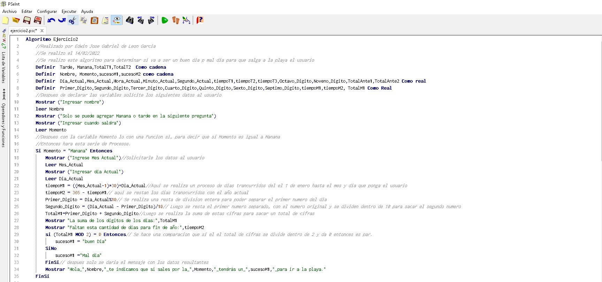
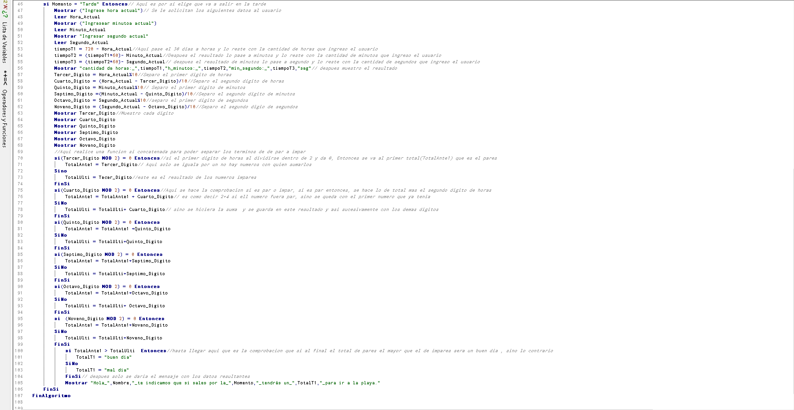

MI PORTAFOLIO

TU CONCEPCIÓN DE CIENCIA DE LA COMPUTACIÓN

QUE TE LLEVAS DE ESTE PRIMER CICLO


Poder culminar bien mi semestre poder seguir en limpio toda mi carrera universitaria, así poder conseguir un trabajo en mi próximo año.

Culminar mis estudios universitarios, para despues sacar un maestria y obtener mas conocimiento en mi area si

Tener m propia empresa de ciberseguridad, para poder tener un poco de libertad para poder emprender en otra área que talvez no tengan que ver con programación.
LOS TRABAJOS QUE REALICE |
|
LOS TRABAJOS QUE MAS ME GUSTARON:LOS TRABAJOS DONDE PUDE APRENDER MAS Y DESARROLLARME MEJOR. |
|
|  | |
|  | |
MI PRIMER INTENTO DE CANCION |
|
LOS TRABAJOS QUE MENOS ME HAN GUSTADO: LOS TRABAJOS DONDE NO PUDE APRENDER MASNI DESARROLLARME POR QUE NO ERAN TAN ANALITICOS |
|
MI PROPIO JUEGO |
|
https://github.com/EJGDLG/NewPlay.git |
|